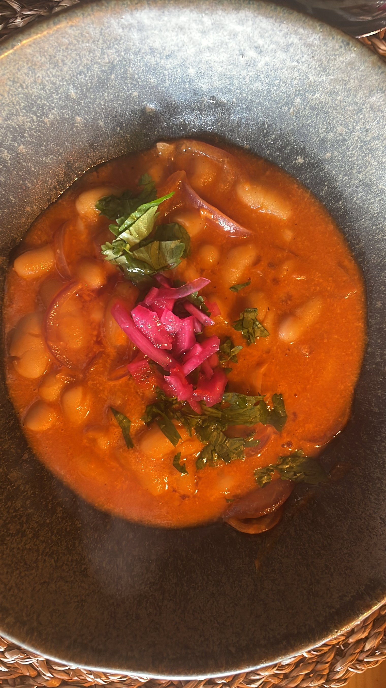

Alubias blancas con tomate
Ingredientes
2×
- 1 cebolla
- 1 diente de ajo
- aceite de oliva
- 200 g de tomate triturado
- 1 cdta de pimentón
- 400 g de alubias blancas cocidas
- un vaso de caldo de verduras
- cebolla morada encurtida
- albahaca o perejil

Preparación
Paso 1
Sofreír 1 cebolla y 1 diente de ajo picados con aceite de oliva. Añadir 200 g de tomate triturado y 1 cdta de pimentón, y cocer 10min.
Paso 2
Añadir 400 g de alubias blancas cocidas y un vaso de caldo de verduras, salpimentar y cocer 10min a fuego suave.
Paso 3
Servir con cebolla morada encurtida y albahaca o perejil picados por encima.